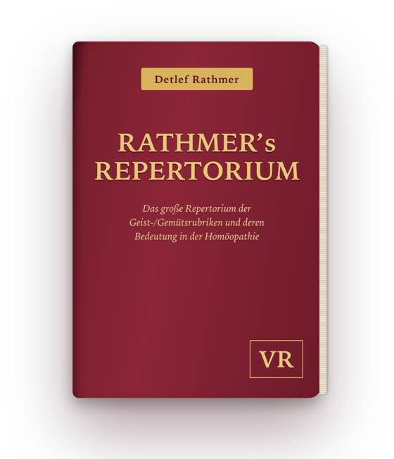
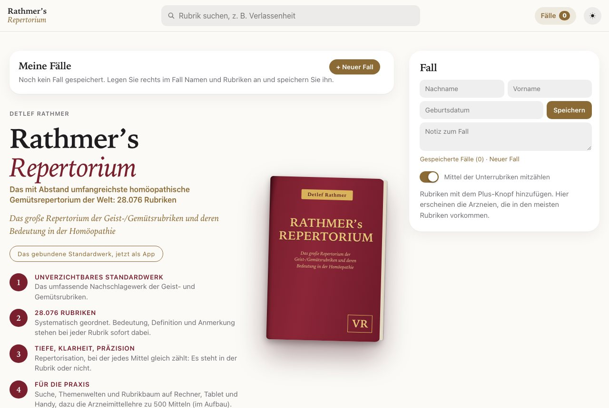
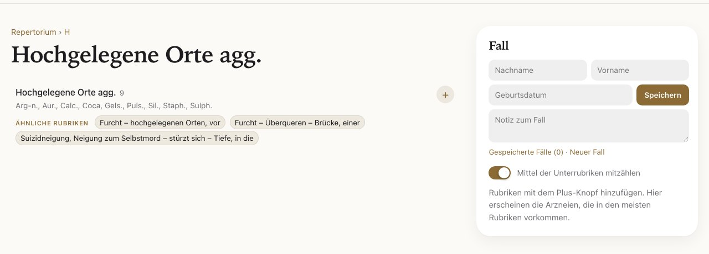
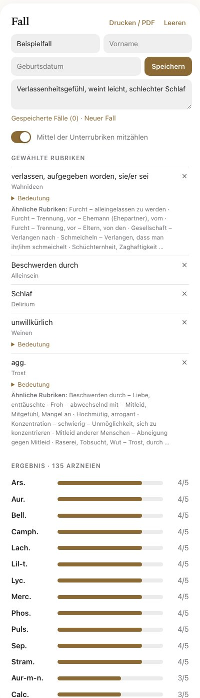

Repertorisations-Software für klassische Homöopathen
Rathmer’s Repertorium
Rubriken wählen, Mittelergebnis sehen, Fall speichern – mit dem umfangreichsten homöopathischen Gemütsrepertorium der Welt, als App auf Rechner, Tablet und Handy.
Repertorisations-Software für klassische Homöopathen
Rubriken wählen, Mittelergebnis sehen, Fall speichern – mit dem umfangreichsten homöopathischen Gemütsrepertorium der Welt, als App auf Rechner, Tablet und Handy.
Musik: „Brandenburg Concerto No4-1 BWV1049 – Classical Whimsical“, Kevin MacLeod (incompetech.com), Licensed under Creative Commons: By Attribution 4.0

Repertorisieren Sie in Sekunden: Rubriken wählen, die Mittel erscheinen nach Häufigkeit, Fall speichern und drucken. Grundlage sind 27.981 Rubriken der Geist- und Gemütssymptome, 5.930 davon mit Bedeutung, Definition oder Anmerkung. Dazu Querverweise und die Arzneimittellehre zu 500 Mitteln. Auf Deutsch und Englisch.
Einführungspreis € 119,50 für die ersten Monate, danach € 149,50. Einmalige Zahlung, kein Abo. Zugang ohne Ablaufdatum, Verfügbarkeit mindestens 5 Jahre garantiert.
Beide laufen im Browser auf jedem Gerät und bauen auf denselben Rubriken auf. Die Enneagramm-Ausgabe zeigt nur die Rubriken der neun Enneagramm-Heilmittel. Das große Repertorium enthält alles und lässt sich per Schalter auf die Enneagramm-Homöopathie einstellen.
Für alle, die über die Enneagramm-Homöopathie hinaus repertorisieren.
€ 119,50Einführungspreis, danach € 149,50
Für alle, die ausschließlich nach dem Konzept der Enneagramm-Homöopathie arbeiten.
€ 79,50Einführungspreis, danach € 99,50
Einmalige Zahlung, kein Abo. Zugang ohne Ablaufdatum, Verfügbarkeit mindestens 5 Jahre garantiert. Endpreise; gemäß § 19 UStG wird keine Umsatzsteuer ausgewiesen. Nachschlagewerk speziell für Homöopathen, ersetzt keine Diagnose und keine ärztliche oder heilkundliche Behandlung.
Rubriken wählen, die Arzneien erscheinen nach Häufigkeit. Fälle speichern, Name und Notizen ergänzen, als PDF drucken.
27.981 Rubriken, systematisch geordnet. Nach Themenwelten, von A bis Z oder über die Suche in Sekunden gefunden.
Bei 5.930 Rubriken stehen Bedeutung, Definition oder Anmerkung direkt dabei, bei über 1.000 davon ausführlich. Vier von fünf Hauptrubriken sind erklärt, besonders die praxisrelevanten. So wird klar, was eine Rubrik wirklich meint, bevor sie gewählt wird.
„Siehe unter“ und „Ähnliche Rubriken“ aus dem Buch sind anklickbar. Keine passende Rubrik mehr übersehen.
Aus den Rubriken zusammengestellt: kennzeichnende Rubriken, King-Pin-Symptome und alle Themenfelder je Mittel.
Mit einem Schalter lassen sich die neun Enneagramm-Mittel hervorheben, oder das ganze Repertorium wird auf sie eingestellt. So repertorisieren Sie nach dem Konzept der Enneagramm-Homöopathie.
Im Browser auf Windows, Mac, iPhone, iPad und Android, ohne Installation und ohne zusätzliche Software. Hell oder dunkel, und auf den Home-Bildschirm gelegt öffnet sie sich wie eine App.



In der Probe-Version sind fünf große Rubriken freigeschaltet (Angst, Traurigkeit, Zorn, Reizbarkeit und Weinen) und zehn Polychreste in der Arzneimittellehre, mit allen Funktionen. Ohne Anmeldung, ohne Kosten.
Tipp: In Safari auf „Teilen“ → „Zum Home-Bildschirm“ tippen, dann öffnet sie sich wie eine App.
In Ihrer Bestätigungsmail steht ein Treue-Code: 10 % Rabatt auf Rathmer’s Repertorium, gültig bis 31. Dezember 2027.
Das Repertorium ist ein Nachschlagewerk speziell für Homöopathen. Es ersetzt keine Diagnose und keine ärztliche oder heilkundliche Behandlung.